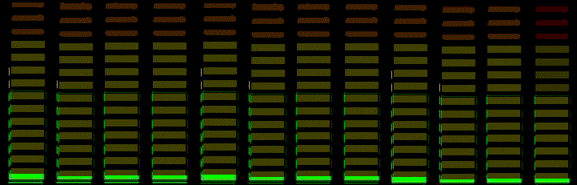

Християнське онлайн радіо
Сбірка: (Дім Євангелія" м Суми., Украина)

Чтение Нового Завета
Ветхий Завет
СВІТЛЕ РАДІО ЕММАНУЇЛ
Детское христианское радио
Инструментальная Христианская музыка
Слово Благодати
Семейное Радио Эли
«Открытое Слово» Авто радио
«Открытое Слово» христианское радио
«Открытое Слово» христианское радио укр.
Ваш браузер не поддерживает аудио элементы.